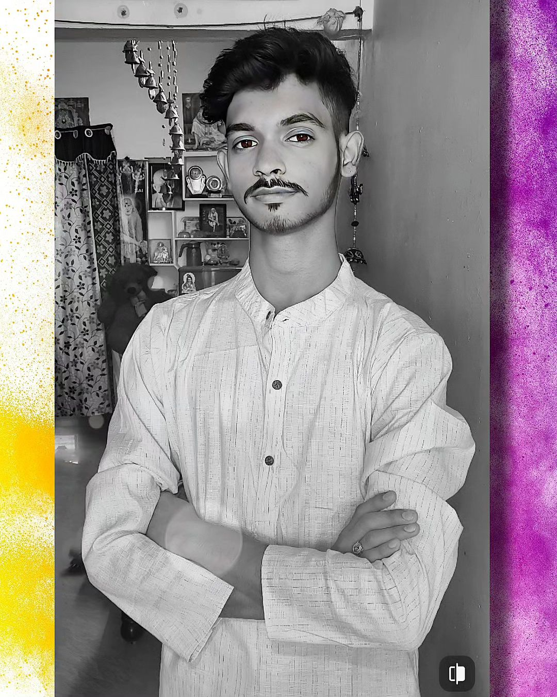
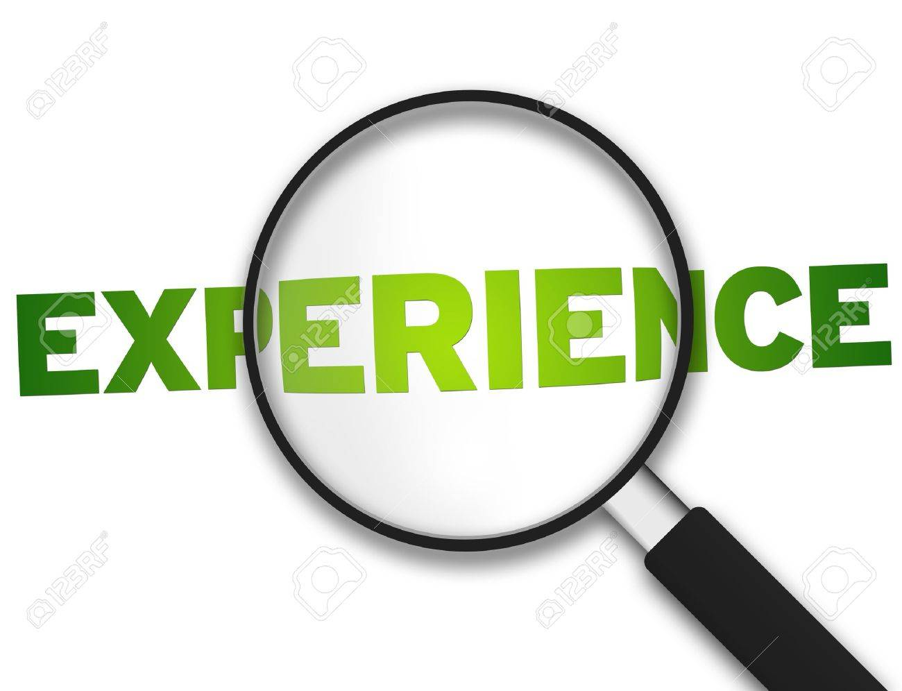

About Me
My name is Yadhav Balaji Rao, and I am a motivated IT professional seeking a challenging career in the IT industry. I am aiming to leverage innovative ideas and grow with an organization.
Academic Credentials

- Master of Computer Applications (MCA) - Pursuing
- Mohan Babu University | 2022-2024
- Bachelor of Science | Sri Venkateswara University | 2019-2022
- CGPA: 8.50
Technical Skills
- Programming Languages: Python
- Web Development: HTML, CSS, JavaScript
- Data Analysis: Pandas
- Database Management: SQL
Experience
J.P.Morgan - Investment Banking Virtual Experience
Intern | June 2023 - August 2023
Projects

- Python-based QR Code Generator - Developed a QR code generator project showcasing programming skills.
- Graphical User Interface (GUI) Calculator - Created a Python-based GUI calculator demonstrating problem-solving skills.
Achievements
- Gold Medalist and Team Leader at the Science Day program during graduation.
Certifications

- Python: Certification from the Infosys Springboard.
- SQL, CSS, HTML: Certification from The Great Learning.
- Intermediate Instagram Mastermind Certification from the Bizgurukul Organization (Score: 90/100).
Declaration
I hereby declare that all the information given above is true and correct to the best of my knowledge and belief.